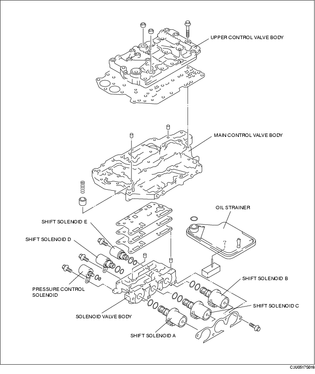

Control valve body outline [FN4A-EL]
• The control valve body is composed of three bodies: the upper control valve body, main control valve body, and the solenoid control valve body.
• Because the clutch engagement pressure is controlled electronically, the hydraulic circuits are simplified, the valve types are reduced, and the control valve body is miniaturized.
• The nonwoven fabric oil strainer is installed in the control valve body to prevent contamination.
